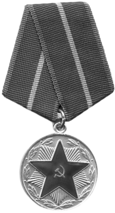
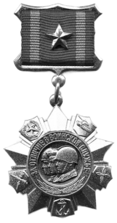
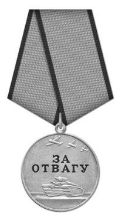

Кратко о биографии
Проходил срочную службу на атомной подводной лодке Северного флота (1975–1978), после чего с 1979 года работал в органах госбезопасности. Окончив с отличием Высшую школу КГБ, расследовал дела о контрабанде и организованной преступности. В 1990-е годы, будучи сотрудником ФСБ, участвовал в борьбе с терроризмом, но в 1997 году был уволен по сокращению. Затем служил в налоговой полиции, где вёл резонансные дела, однако карьера там прервалась из-за конфликта с руководством. В 2000 году уволился в звании полковника налоговой полиции.
- 
- 
- 
Награды

 3 Медали
3 Медали- 5 Юбилейных Медалей
- 10 Общественных наград